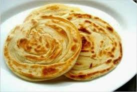

Resep Kue Maryam

Bahan - bahan
- 250 gr tepung terigu
- 1 butir telur
- 3 sdm margarin, lelehkan
- 100 ml air hangat
- 2 sdm susu bubuk (optional)
- 1/2 sdt garam
- margarin leleh untuk olesan
- minyak untuk merendam
Langkah - langkah
- Campur semua bahan roti jadi satu

- Uleni sampai kalis

- Kalisnya adonan canai tidak sekalis adonan roti ya, kira2 seperti ini sudah cukup.

- Panaskan teflon dengan api kecil aja. Panggang adonan dengan sekali balik, tekan-tekan supaya matangnya rata.